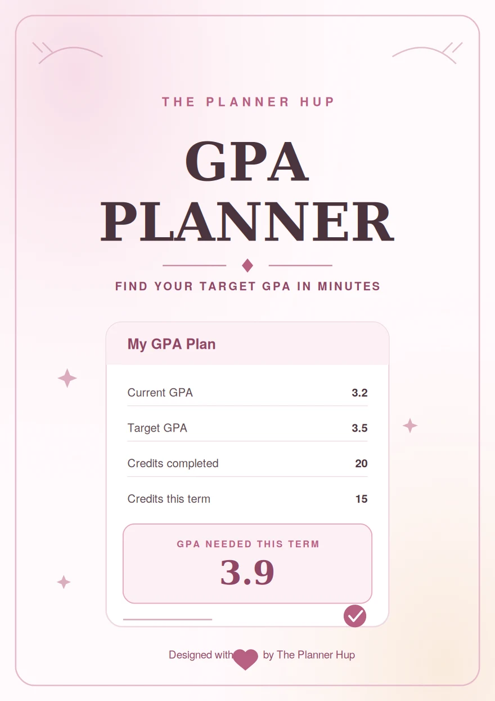

- Grade points = Credit hours × GPA
GPA Planner: How Much Do You Need in Finals to Reach Your Target GPA?

If you're staring at your grades wondering "what do I actually need on my finals?", a GPA planner answers that question with real numbers, not guesswork. You take your current GPA, your target GPA, and your credit hours, then work out the exact grade point average your remaining classes need to hit. This article shows you the full math, step by step, so you can do it yourself or use our free tool to do it instantly.
By the end, you'll know exactly how to plan your GPA before finals season instead of hoping for the best.
What Is a GPA Planner?
A GPA planner is a tool, or a method, that helps you figure out what grades you need in your upcoming classes to reach a specific GPA goal.
Instead of just calculating the GPA you already have, it works backward from the GPA you want. That's the key difference between a basic GPA calculator and a proper gpa calculator planner: one tells you where you are, the other tells you what to do next.
This matters most right before finals, when your remaining grades are the last chance to shift your semester or cumulative GPA before it's locked in.
Why Planning Your GPA Actually Helps
Most students only check their GPA after grades are posted. By then, it's too late to change anything.
Planning ahead means you can:
- See if your target GPA is realistic with the credits you have left
- Know exactly which grade range to aim for in each final
- Avoid the panic of guessing whether one bad exam will "ruin everything"
- Decide where to focus your study time: the classes that move your GPA the most
A GPA planner turns a vague worry into a clear, specific number.
The Formula Behind Every GPA Planner
Before the examples, here's the one formula everything is built on:
Your GPA is just your total grade points divided by your total credit hours. So to plan a target GPA, you work the formula backward:
- Find your current grade points (credits already completed × current GPA)
- Find the grade points you'll need in total (future total credits × target GPA)
- Subtract the two to find how many grade points your remaining classes must earn
- Divide that by your remaining credit hours to get the GPA you need this term
That's it. Four steps, no advanced math. Let's run it with real numbers.
Worked Example 1: Raising a 3.2 GPA to a 3.5 Target
Meet Sarah. She has completed 20 credit hours so far with a cumulative GPA of 3.2. This semester, she's taking 15 credit hours, and she wants her cumulative GPA to reach 3.5 by the end of the term.
Here's exactly how to work out what she needs.
Step 1: Find her current grade points
Grade points = credit hours × GPA
20 credits × 3.2 GPA = 64 grade points so far.
Step 2: Find her target total grade points
First, find her total credits after this semester:
20 credits (completed) + 15 credits (this semester) = 35 total credits
Now multiply that by her target GPA:
35 credits × 3.5 target GPA = 122.5 grade points needed in total.
Step 3: Find how many grade points she needs from this semester
Target grade points − current grade points = grade points still needed
122.5 − 64 = 58.5 grade points must come from this semester's 15 credits.
Step 4: Find the GPA she needs this semester
Grade points needed ÷ remaining credit hours = required semester GPA
58.5 ÷ 15 = 3.9 GPA needed this semester.
- What this means in practice: Sarah needs an average close to straight A's this semester (a 3.9 is roughly all A's with maybe one A-) to bring her cumulative GPA up to 3.5. That's a demanding but realistic target, and now she knows exactly what to aim for going into finals, instead of guessing.
Worked Example 2: Raising a 2.8 GPA to a 3.0 Target
Here's a shorter example to show the same method works for any numbers.
Jordan has 30 completed credit hours at a 2.8 GPA. This semester he's taking 12 credit hours, and he wants to reach a 3.0 cumulative GPA.
- Current grade points: 30 × 2.8 = 84
- Total credits after this semester: 30 + 12 = 42
- Target grade points: 42 × 3.0 = 126
- Grade points needed this semester: 126 − 84 = 42
- Required semester GPA: 42 ÷ 12 = 3.5
Jordan needs a 3.5 GPA this semester, roughly a mix of A's and B+'s, to bring his cumulative GPA up to 3.0. Same formula, different numbers, same clear answer.
How to Plan Your GPA: What You Need in Your Finals
Want to run your own numbers? This is how to plan your gpa step by step:
Step 1: Gather your current numbers
Write down your total completed credit hours and your current cumulative GPA. Check your school's student portal or your last transcript if you're not sure.
Step 2: Add up your remaining credit hours
Count the credit hours for every class you're currently taking. This is what your final grades will apply to.
Step 3: Decide your target GPA
Be specific. "Better" isn't a number. Pick an exact target, like 3.5 or 3.0.
Step 4: Run the four-step formula
Use the same steps from the examples above: find current grade points, find target grade points, subtract to find what's needed, then divide by remaining credits.
Step 5: Check if it's realistic
If the GPA you need comes out above 4.0 (or above your school's max scale), your target isn't reachable in one term with your current credit load. That's not a failure, it just means you may need an extra semester, or you'll also need to check if any individual finals carry extra weight (see the mistakes section below).
Step 6: Check the final exam marks needed for one class
Your semester GPA is made of individual class grades, and each of those is often made of coursework plus a final exam. Here's a quick example of that smaller calculation.
Say your current grade in one class is 78%, and the final exam is worth 40% of your total grade (coursework makes up the other 60%). If you want your final grade in that class to reach 85%, here's the math:
- Coursework contributes: 78% × 60% = 46.8 points
- Points still needed from the final: 85% − 46.8% = 38.2 points
- Required final exam score: 38.2 ÷ 40% = 95.5%
So you'd need about a 95.5% on that final to bring the class grade up to 85%. This is the kind of check worth running before you decide a target GPA is realistic, since one heavily-weighted final can change your whole plan. Our final exam marks needed calculator runs this automatically if you'd rather skip the manual steps.
Common Mistakes Students Make When Planning Their GPA
Ignoring credit hours
A 4-credit class affects your GPA twice as much as a 2-credit class. Treating every class as equally important when planning your target GPA will throw off your numbers.
Assuming all classes are weighted the same
Some classes give more weight to the final exam than others. A class where the final is 50% of your grade needs a very different plan than one where it's only 15%.
Forgetting past semesters count too
Your cumulative GPA includes every credit hour you've ever completed, not just this semester. Leaving out old credits will give you a wildly inaccurate target.
Setting a target without checking if it's mathematically possible
As shown above, sometimes the GPA "needed" comes out above 4.0. Planning around an impossible number just leads to unnecessary stress, so check the math first.
Only calculating GPA after grades are final
By definition, a GPA planner is meant to be used before finals, not after. Once the semester ends, you're calculating history, not planning your target.
Use a GPA Planner Instead of Doing It by Hand Every Time
The math above isn't hard, but running it for every class, every semester, gets tedious fast, especially if you're also trying to compare a few different target GPA scenarios.
Our free GPA Calculator & Grade Predictor does this instantly: enter your current GPA, your credits, and your target GPA, and it works out the exact number you need, as both a target GPA calculator and a grade predictor for individual finals.
Try the Free GPA Calculator See all free toolsConclusion
Planning your GPA before finals isn't about being obsessive over numbers. It's about knowing exactly where you stand so you can study smart instead of guessing. The formula is simple: find your current grade points, find your target grade points, and work out what your remaining credits need to cover the gap.
Try the worked examples above with your own numbers, or skip the manual math with our GPA Calculator & Grade Predictor and get your exact target GPA in seconds. And if you're planning your whole academic year, not just this semester, our Student Full Year Planner can help you stay on track from day one.
FAQ
What is a GPA planner used for?
A GPA planner works backward from your target GPA to tell you what grades you need in your current or upcoming classes. It's different from a basic GPA calculator, which only tells you the GPA you already have.
How do I calculate the GPA I need in my finals?
Find your current grade points (completed credits × current GPA), find your target grade points (total future credits × target GPA), subtract the two, then divide by your remaining credit hours. This gives you the exact GPA you need this term.
Why does my GPA planner say I need more than a 4.0?
This means your target isn't reachable in a single term with your current credit load. You'll likely need an extra semester to reach that target, or you may need to lower your target for this term.
Do all classes affect my GPA the same amount?
No. Classes with more credit hours affect your GPA more than classes with fewer credit hours. A 4-credit class has double the impact of a 2-credit class on your overall GPA.
Can I use a GPA planner for just one class instead of my whole semester?
Yes. If you want to know the final exam marks needed for a single class, you need that class's current grade and how much weight the final counts for. Our GPA calculator handles both whole-semester and single-class planning.